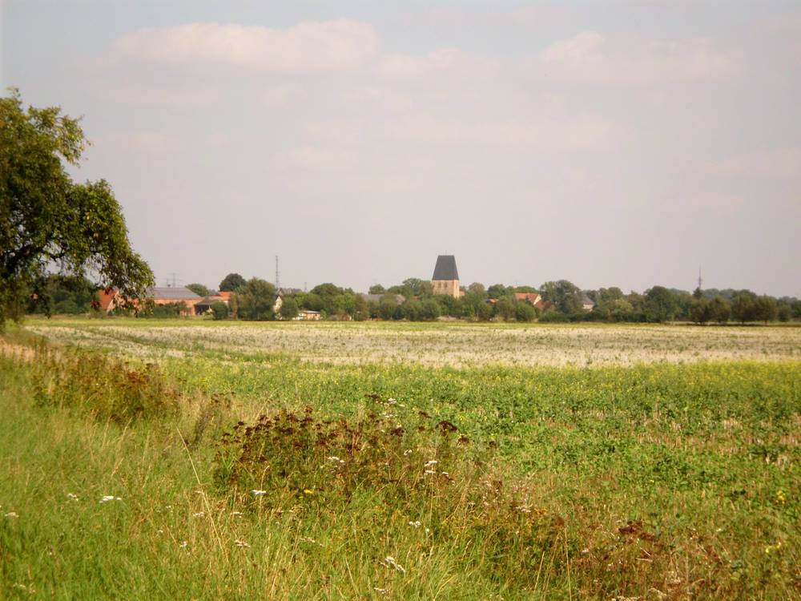

독일 페를레베르크 두 마을 주민 "태양광단지 반대"…구속력 없는 주민 의견조사에도 개발사 41헥타르 계획 접어

데르겐틴 11명 중 반대 8·기권 3, 쥐코 35명 중 찬성 10·반대 19…같은 군 실데에서도 9월 조사 때 80% 가까이 반대
독일 브란덴부르크주 프리그니츠군 페를레베르크시의 두 마을 주민들이 농지에 태양광단지를 짓는 계획에 반대 의견을 내자, 개발사가 사업을 더 추진하지 않기로 했다. 개발사 솔라빈트 프로젝트는 2025년 12월 5일 시에 쥐코 마을 35헥타르, 데르겐틴 마을 6헥타르 규모의 지상형 태양광 설치를 문의했고, 시는 내부 사전 검토 뒤 정해진 절차에 따라 올해 10월 5일 주민총회와 의견조사를 열었다. 데르겐틴에서는 참석 주민 11명 가운데 8명이 반대하고 3명이 기권했으며, 쥐코에서는 35명 가운데 찬성 10명, 반대 19명, 기권 6명으로 나타났다. 조사 결과는 법적 구속력이 없지만 개발사는 주민 뜻을 받아들여 계획을 접겠다고 밝혔고, 이 사실은 10일 시의회 도시개발위원회에서 보고됐다. 같은 군 실데에서도 지난 9월 의견조사에서 참석자 80% 가까이가 새 태양광단지에 반대표를 던지는 등 이 지역에서는 대형 태양광을 둘러싼 갈등이 이어지고 있다. 위원회에서는 이런 결정에 더 많은 주민이 참여하면 좋겠다는 의견도 나왔다.
시민에너지 관점
41헥타르짜리 단지가 주민 수십 명의 손에서 멈춘 것은, 땅과 마을을 내주는 쪽이 얻는 것이 없으면 재생에너지가 아무리 싸도 설 자리가 없다는 뜻이다. 독일은 이미 재생에너지법으로 태양광·풍력 사업자가 발전량 1kWh당 최대 0.2센트를 지자체에 나누도록 길을 열었지만, 밖에서 온 개발사가 설명회 한 번으로 동의를 얻기는 여전히 어렵다. "주민 반대 때문에 전환이 늦어진다"는 걱정은 주민을 설득 대상이 아니라 주주로 세울 때 풀린다. 우리도 농지·마을 부지 태양광은 처음 계획 단계부터 주민이 출자하고 수익을 나누는 구조를 기본으로 삼아야 한다.
출처: Nordkurier 2026-11-11 Arne Schmidt 원문 보기
창간 전 시험 발행 기사입니다.
独ペルレベルクの2村の住民が「太陽光団地に反対」…拘束力のない住民意見調査でも開発会社が41ヘクタール計画を断念
デルゲンティンは11人中反対8・棄権3、ジューコウは35人中賛成10・反対19…同じ郡のシルデでも9月の調査で8割近くが反対
ドイツ・ブランデンブルク州プリクニッツ郡ペルレベルク市の2つの村の住民が農地に太陽光団地を建てる計画に反対の意見を示し、開発会社は事業をこれ以上進めないことを決めた。開発会社ソーラーヴィント・プロジェクトは2025年12月5日、ジューコウ村に35ヘクタール、デルゲンティン村に6ヘクタールの地上設置型太陽光の設置を市に打診し、市は内部の事前審査の後、定められた手続きに沿って今年10月5日に住民集会と意見調査を開いた。デルゲンティンでは出席した住民11人のうち8人が反対、3人が棄権し、ジューコウでは35人のうち賛成10人、反対19人、棄権6人だった。調査結果に法的拘束力はないが、開発会社は住民の意思を受け入れて計画を取りやめると表明し、このことは10日の市議会都市開発委員会で報告された。同じ郡のシルデでも9月の意見調査で出席者の8割近くが新たな太陽光団地に反対票を投じるなど、この地域では大型太陽光をめぐる対立が続いている。委員会では、こうした判断にもっと多くの住民が参加してほしいとの声も出た。
市民エネルギーの視点
41ヘクタールの団地が数十人の住民の手で止まったことは、土地と村を差し出す側が何も得られなければ、再エネがいくら安くても居場所はないということだ。ドイツはすでに再生可能エネルギー法で、太陽光・風力事業者が発電量1kWhあたり最大0.2セントを自治体に分配できる道を開いたが、外から来た開発会社が説明会1回で同意を得るのは依然として難しい。「住民の反対で転換が遅れる」という懸念は、住民を説得の対象ではなく株主として迎えるときに解ける。韓国でも農地や村の土地での太陽光は、計画の最初の段階から住民が出資し収益を分ける仕組みを基本にすべきだ。
出典: Nordkurier 2026-11-11 Arne Schmidt 原文を読む
創刊前の試験発行記事です。
德国佩勒贝格两村居民"反对光伏园区"…意见调查虽无约束力，开发商仍放弃41公顷计划
德根廷11人中8人反对、3人弃权，聚科35人中10人赞成、19人反对…同县席尔德9月调查也有近八成反对
德国勃兰登堡州普里格尼茨县佩勒贝格市两个村庄的居民对在农地上建设光伏园区的计划表示反对后，开发商决定不再推进该项目。开发商SolarWind Projekt于2025年12月5日向市政府询问在聚科村建设35公顷、在德根廷村建设6公顷地面光伏电站的可能性，市政府经内部预审后，按规定程序于今年10月5日召开居民大会并进行意见调查。德根廷到场的11名居民中8人反对、3人弃权；聚科35人中10人赞成、19人反对、6人弃权。调查结果没有法律约束力，但开发商表示尊重居民意愿、放弃计划，此事于10日在市议会城市发展委员会上通报。同县席尔德9月的意见调查中，近八成到场者也对新建光伏园区投了反对票，当地围绕大型光伏的争议持续不断。委员会上也有人表示，希望更多居民参与此类决定。
市民能源视角
一个41公顷的园区被几十名居民叫停，说明如果提供土地和村庄的一方得不到任何好处，再便宜的可再生能源也难以落地。德国已通过《可再生能源法》允许光伏和风电运营商按每千瓦时最多0.2欧分向地方政府分配收益，但外来开发商靠一场说明会赢得同意依然很难。"居民反对拖慢转型"的担忧，只有把居民当作股东而非说服对象才能化解。韩国的农地和村庄光伏也应从规划之初就以居民出资、共享收益为基本结构。
来源: Nordkurier 2026-11-11 Arne Schmidt 查看原文
本文为创刊前试发行文章。
Residents of Two Villages Near Perleberg, Germany, Say No to Solar Parks; Developer Drops 41-Hectare Plan Despite Non-Binding Vote
In Dergenthin 8 of 11 opposed and 3 abstained; in Sükow 19 of 35 opposed and 10 supported. Nearby Schilde also voted close to 80% against in September
A developer has abandoned plans for ground-mounted solar parks on farmland in two villages of Perleberg, in Brandenburg's Prignitz district, after residents voiced majority opposition. SolarWind Projekt GmbH approached the town on 5 December 2025 about a 35-hectare installation in Sükow and a 6-hectare one in Dergenthin, and after an internal review the town held a residents' assembly and opinion poll on 5 October, as its procedure requires. In Dergenthin, 8 of the 11 residents present voted against and 3 abstained; in Sükow, 10 of 35 supported the plan, 19 opposed it and 6 abstained. The result is not legally binding, but the developer said it would not pursue the projects, according to a notice presented to the town's urban development committee on Tuesday. In nearby Schilde, close to 80% of those present voted against a new solar park in a September poll, reflecting continuing local disputes over large solar farms. One committee member said wider resident participation in such decisions would be welcome.
Citizen Energy View
A 41-hectare project halted by a few dozen villagers shows that however cheap renewables become, they will not find room if the people giving up land and landscape gain nothing. Germany's Renewable Energy Sources Act already lets solar and wind operators share up to 0.2 cents per kWh with municipalities, yet an outside developer still struggles to win consent with a single information evening. The fear that local opposition slows the transition eases when residents are treated as shareholders rather than people to be persuaded. Solar on farmland and village land in Korea should make resident investment and profit-sharing the default from the very first planning stage.
Source: Nordkurier 2026-11-11 Arne Schmidt Read the original
This article was published during the trial period before launch.